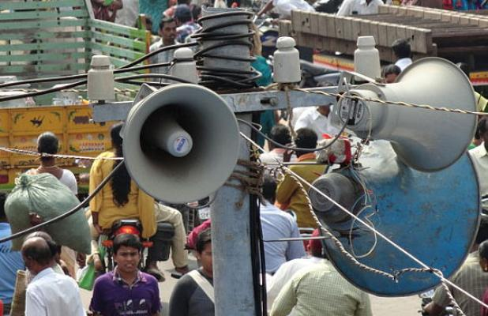
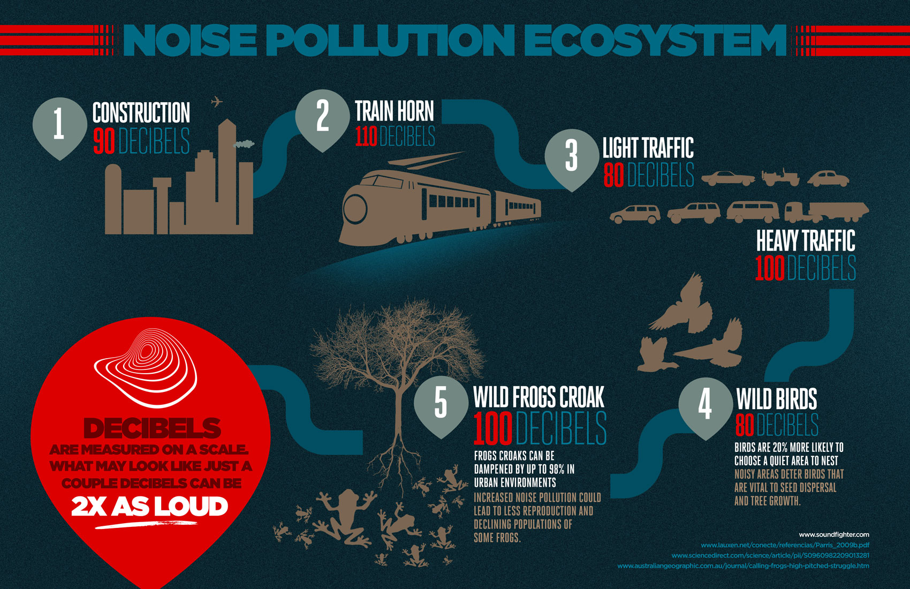
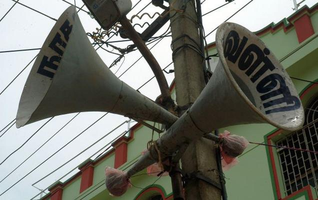
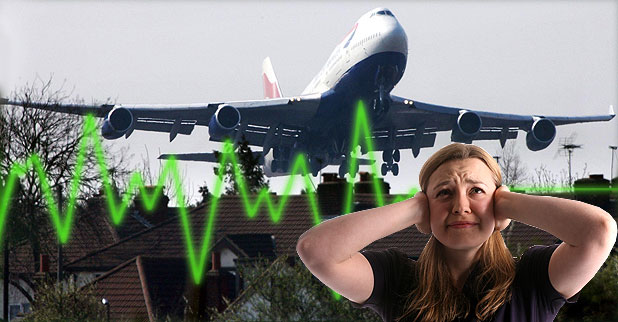
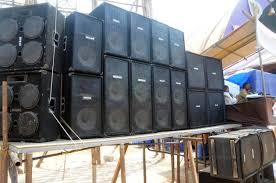
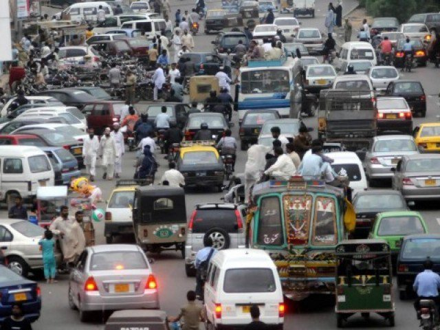

|       | ||
|
Project Water pollution Air Pollution Soil Pollution Sound Pollution | SOUND POLLUTION & SOUND POLLUTION CONTROL
Nantes Métropole does not have a history of measuring noise levels across its territory. There is however mapping and regulatory assessment. As far as tackling noise in France is concerned, the State may legislate, but it is mayors who have the day-to-day responsibility for tackling neighbourhood noise under their policing powers, even if new urban communities such as Nantes Métropole have powers to 'tackle noise nuisance'. It is on this basis that Nantes Métropole has implemented European Directive 2002/49/EC. In order to be effective, an active policy on the sound environment must include all institutional players and citizens. Traffi c is the predominant source of this noise and chiefl y affects the territory of Nantes : of the 16 % of inhabitants exposed to a level L den > 65 dBA over 24 hours, 77 % live in Nantes, and of the 4 % of inhabitants exposed at night-time to a level Ln > 60 dBA, 98 % are from Nantes. The list of sensitive buildings (schools, hospitals, etc.) exposed to an Lden > 60 dBA indicates that 68 % are located within City of Nantes. With regard to rail noise (trains, trams), under 1 % of the population is exposed to an Lden > 60 dBA, but 88 % of those are from Nantes. | |